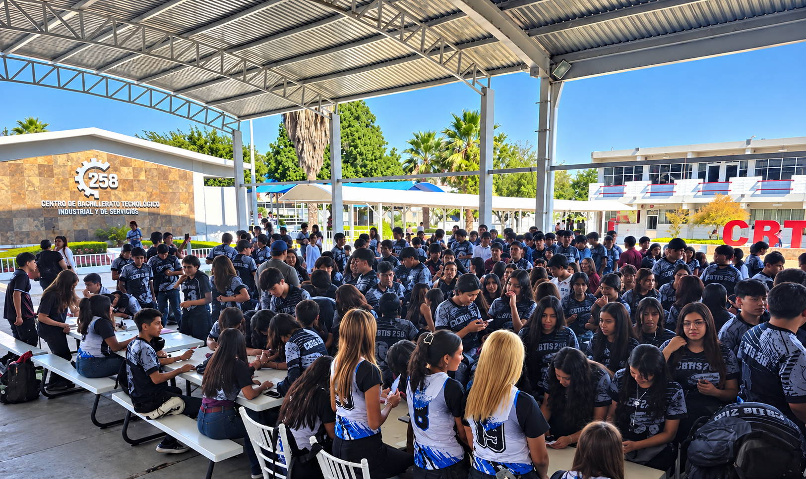
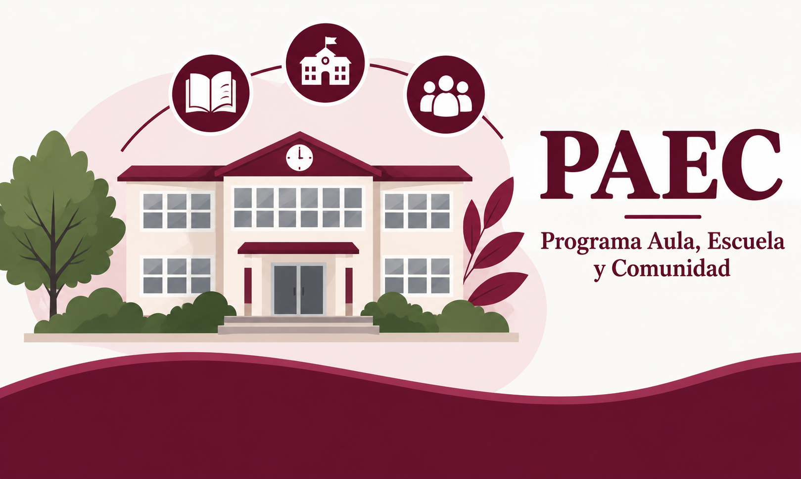
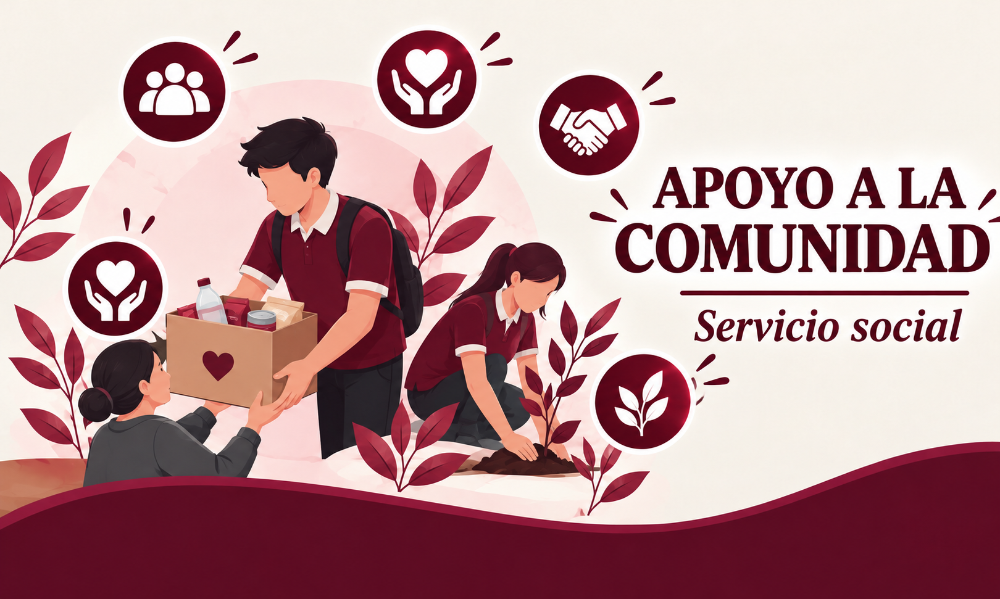
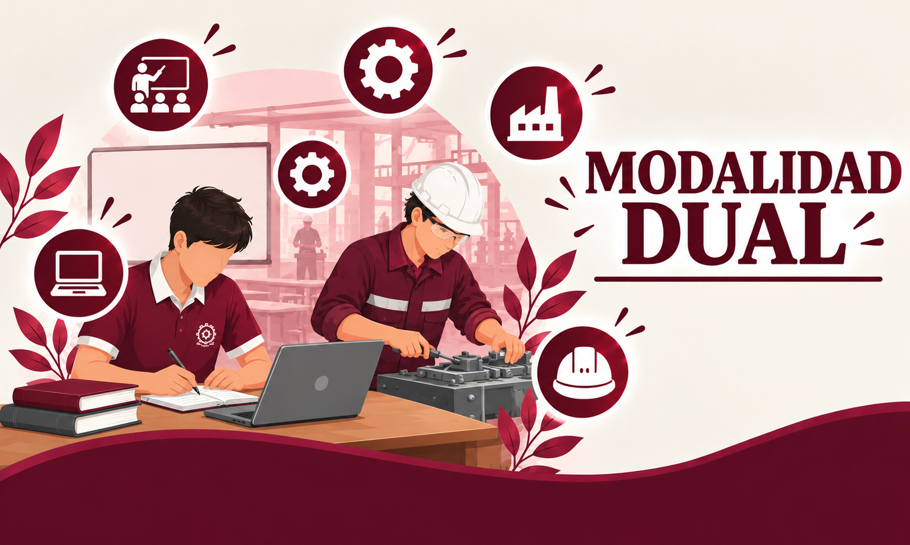
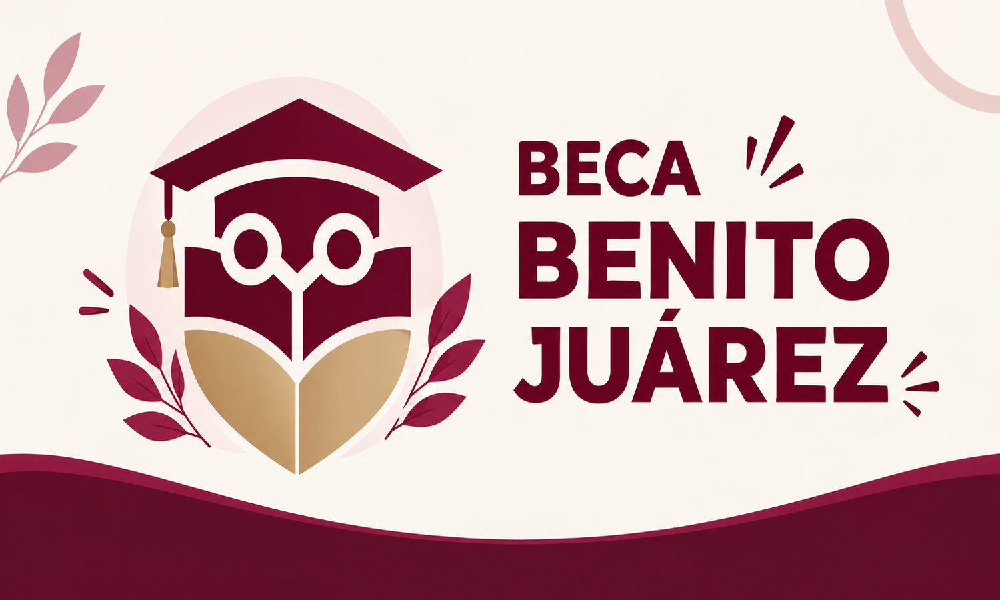
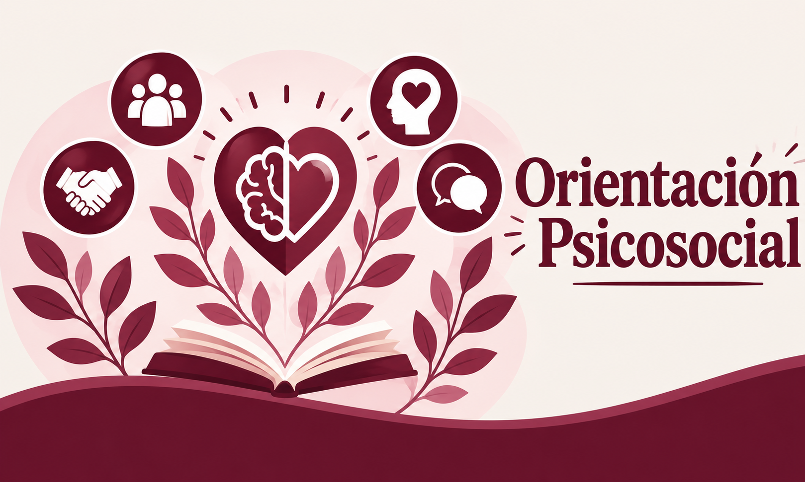
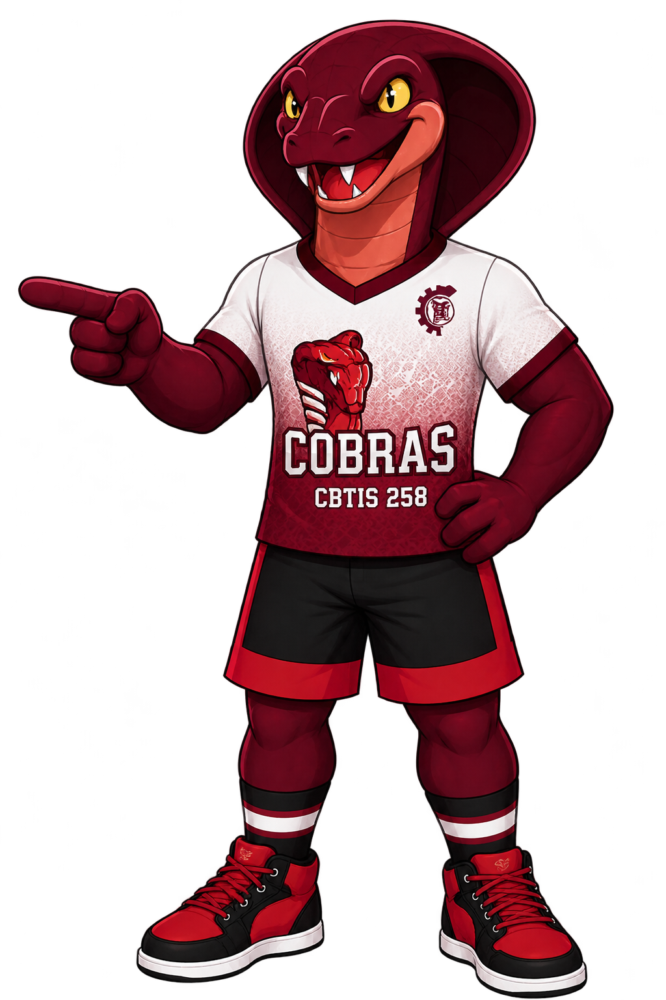

CBTIS 258 · FORMACIÓN TECNOLÓGICA
Alcancemos el mañana con nuestra propia tecnología
Formación, disciplina y esfuerzo para construir un mejor futuro.

CBTIS
258
CBTIS 258
TU FUTURO COMIENZA AQUÍ
CONOCE NUESTRA INSTITUCIÓN
Nuestro
Nuestro
Plantel
Somos una institución de Nivel Medio Superior técnico, donde los alumnos cursan su bachillerato (preparatoria) y una carrera técnica.
Si el egresado decide estudiar la Educación Superior, puede continuar su preparación en una carrera de licenciatura o ingeniería, de acuerdo con los requisitos de admisión correspondientes.
CONOCE NUESTRO PLANTEL
CBTIS 258, GENERAL ESCOBEDO, N.L.
VISÍTANOS
¿Dónde nos
¿Dónde nos
encontramos?
Conoce nuestras instalaciones y encuentra la ubicación del CBTIS 258 en General Escobedo, Nuevo León.
Dirección
Calle Prof. Plinio D. Ordóñez 801, Col. Hacienda del Topo, General Escobedo, Nuevo León.
UBICACIÓN CBTIS 258
CBTIS 258 · GENERAL ESCOBEDO, N.L.
CONOCE NUESTRAS
Carreras
Descubre las áreas técnicas en las que puedes desarrollar tus habilidades y prepararte para el mundo laboral.
Inteligencia Artificial
Explora tecnologías inteligentes y soluciones para los desafíos del futuro.
Ver más...Ciberseguridad
Conoce cómo proteger la información, los sistemas y los entornos digitales.
Ver más...Mecánica
Descubre los principios de los sistemas mecánicos, su mantenimiento y funcionamiento.
Ver más...Contabilidad
Conoce el registro y control de las operaciones financieras de una organización.
Ver más...Programación
Desarrolla habilidades para crear programas, páginas web y soluciones digitales.
Ver más...Logística
Aprende sobre la organización, el almacenamiento y la distribución de productos.
Ver más...¡Forma parte del CBTIS 258!
Conoce cómo ingresar a nuestro plantel y prepárate para comenzar una nueva etapa académica. Aquí encontrarás toda la información que necesitas.
Convocatoria
Consulta las fechas y detalles del proceso de admisión en nuestra pagina de Facebook
Requisitos de ingreso
Revisa los documentos y requisitos que debes presentar en nuestra pagina de Facebook

ORGANIZACIÓN ACADÉMICA
Calendario escolar
Consulta las fechas importantes del ciclo escolar, periodos de evaluación, actividades académicas y días de suspensión de clases.
Ver más...
NORMAS Y CONVIVENCIA
Reglamento escolar
Conoce las normas de convivencia, los derechos y las responsabilidades que contribuyen a mantener un ambiente de respeto dentro del plantel.
Ver más...
COMUNICACIÓN INSTITUCIONAL
Avisos importantes
Encuentra información sobre comunicados escolares, fechas relevantes y anuncios dirigidos a estudiantes y padres de familia.
Ver más...
VIDA ESTUDIANTIL
Actividades escolares
Conoce las actividades culturales, deportivas, académicas y recreativas que forman parte de la vida estudiantil de nuestro plantel.
Ver más...
PARTICIPACIÓN COMUNITARIA
PAEC
Espacio para compartir información sobre proyectos escolares y actividades de participación comunitaria vinculadas con el Programa Aula, Escuela y Comunidad.
Ver más...
RECURSOS EDUCATIVOS DIGITALES
Edumedia
Explora recursos y herramientas digitales que apoyan el aprendizaje, facilitan el acceso a contenidos educativos y complementan tu formación académica.
Ver más...
APOYO A LA COMUNIDAD
Servicio social
Participa en actividades que benefician a la comunidad y aplica los conocimientos que has adquirido en tu formación.
Ver más...
EXPERIENCIA LABORAL
Prácticas profesionales
Desarrolla tus habilidades en un entorno real de trabajo y fortalece tu perfil profesional.
Ver más...
FORMACIÓN EN EMPRESAS
Modalidad Dual
Combina tu formación en el aula con la experiencia en empresas del sector productivo.
Ver más...
INFORMACIÓN INSTITUCIONAL
Transparencia
La transparencia permite que estudiantes, madres, padres de familia y la comunidad conozcan información importante sobre el funcionamiento de la institución. Aquí puedes consultar información oficial y acceder a los portales correspondientes para conocer más sobre la educación pública y sus servicios.
Ver más...
APOYO ECONÓMICO
Beca Benito Juárez
La Beca Universal para Educación Media Superior Benito Juárez es un apoyo económico dirigido a estudiantes de bachillerato público que cumplen con los criterios del programa. Consulta los requisitos, las convocatorias y la información oficial para conocer el proceso correspondiente.
Ver más...
DESARROLLO ACADÉMICO
Orientación educativa
La orientación educativa ayuda a los estudiantes a fortalecer sus hábitos de estudio, organizar sus actividades escolares y establecer metas académicas. También permite buscar alternativas ante dificultades escolares y recibir información sobre las opciones de apoyo disponibles en el plantel.
Ver más...
BIENESTAR ESTUDIANTIL
Orientación psicosocial
El bienestar emocional y la convivencia son importantes durante la etapa escolar. La orientación psicosocial busca brindar acompañamiento ante situaciones personales, familiares o de convivencia. Para conocer los servicios disponibles, puedes solicitar información directamente en el plantel.
Ver más...
¿Tienes alguna duda?
Si necesitas información sobre nuestro plantel, las carreras técnicas o el proceso de nuevo ingreso, acude a la coordinación de escolares. ¡Con gusto podrán orientarte!
Teléfono
818 397 1666
Correo electrónico
cbtis258.dir@dgeti.sems.gob.mx
Facebook
CBTIS 258 Oficial
f
Síguenos en nuestras redes
